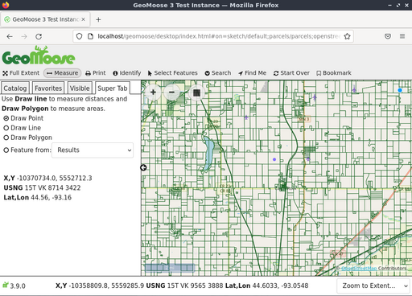
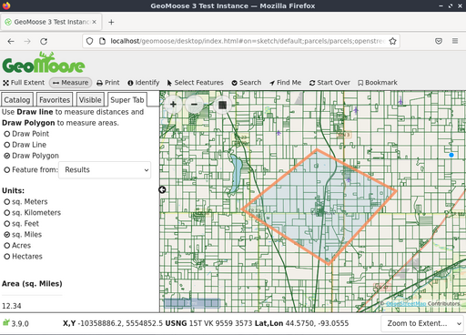
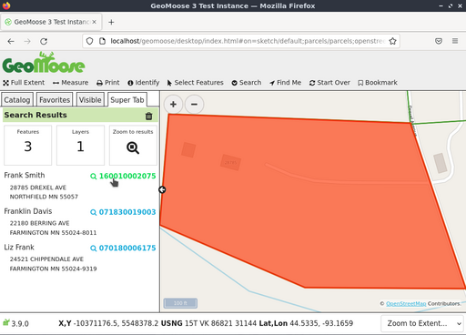

Guía de Inicio Rápido de GeoMoose¶
GeoMoose es un framework de mapeo basado en navegador para visualizar datos cartográficos distribuidos. Es particularmente útil para la gestión de datos espaciales y no espaciales dentro de un condado, ciudad y oficinas municipales (a partir del cual se origina GeoMoose).
GeoMoose es un marco de gestión del portal de datos GIS.La versión instalada de GeoMoose en el Live DVD es un ejemplo de configuración que muestra un ejemplo de conjunto de capas.
Contents
Start GeoMoose¶
Ir a la carpeta «Clientes de Navegador» en el escritorio.
Haga clic en el ícono del escritorio «Iniciar GeoMoose». Esto lanzará el navegador predeterminado que navegará a la ubicación correcta automáticamente.
Se le presentará una página web que muestra una interfaz de demostración de una instancia de GeoMoose.

Las Interfaces presentadas arriba muestran:
- Una barra de banner
- Una barra de herramientas
- A map window with navigation and zoom controls
- Un menú lateral con:
- Una «Saltar a» lista desplegable de ubicación
- Fichas de control a partir de «Catálogo», para mostrar la lista de capas. Según sea necesario, aparecen fichas adicionales: una lectura de «Información», una ficha de salida de «Custom» y otros.
- Una barra a pie de página con:
- Múltiples lecturas de coordenadas, cada una para: X, Y (coordenadas del conjunto de datos locales), LAT/LON (Decimal) y Red Nacional de Estados Unidos (USNG)
- Una lista editable y desplegable para una vista escalas para elegir o definir.
Identify a location¶
- Click on the «identify» («i» in a circle icon) button in the top toolbar
- Click a point on the map.

El catálogo a lo largo de la parte izquierda de la vista del Mapa va a cambiar a «Super Tab» - un lugar donde GeoMoose muestra los resultados de una acción o solicita más información. En este caso, mostrará los resultados de una consulta de cada capa activa e identificable para el punto en que usted hizo click en el mapa.
Use the measuring tool¶
The GeoMoose measure tool allows you to: * measure a point (return the coordinates of a picked point) * measure the distance along a potentially multi-segment line * measure the area of a polygon.
- Click the double ended arrow icon in the top toolbar to start the measuring tool.
- Choose to measure a point, line, or polygon.
- Click on the map where you want to measure. To measure a point, just click the point on the map you want to measure. To measure a line or polygon click on the map for each vertex a of the line/polygon.
- Double click to end the line/polygon.

Nota
you can also measure a pre-existing feature on the map (if it is from a vector layer, including previous query results) without having to manually trace over it.
Select features¶
Puede seleccionar características de un Punto, Línea, Polígono, o de una característica existente. Para comenzar, haga click en el icono «Seleccionar características» (ícono del cursor del ratón), elija punto, línea, polígono y empiece a dibujar su selección en el mapa. Usted puede haga doble click en el último punto para terminar el proceso de dibujo. Si desea ajustar su selección puede hacerlo con la opción «Modificar característica».
También tienes la opción de seleccionar características basados en una versión amortiguada de lo que dibujó. El valor predeterminado es buffer por «0» que no hace nada. Valores positivos amplían lo que dibujó por esa distancia, valores negativos reducen su dibujo.
Seleccione la capa de la que desea seleccionar características usando el revcuadrod e selección «Query Layer». Nota: no todas las capas se pueden utilizar con la herramienta Seleccionar Características. Para estar disponibles para la selección, una capa tiene que ser una capa vectorial y configurarse para la selección en el mapbook.

Por último, haga click en el botón «Go» para seleccionar realmente las características. GeoMoose devolverá un resumen de lo que fue seleccionado en la Super Tab, resaltará las características seleccionadas en el mapa y mostrará una tabla de atributos de ellas.

Si pasa el cursor sobre una línea en la tabla, se destacará la función correspondiente en el mapa. Además, usted puede utilizar los iconos de embudo en el encabezado de tabla para filtrar aún más los resultados y utilizar los iconos de triángulo en el encabezado de la tabla para ordenar los resultados. Los resultados pueden descargarse como un archivo CSV utilizando el icono de descarga para la parte superior e izquierda de la tabla.
Search for features¶
También puede buscar características por atributo. Para comenzar, pasa el cursor sobre el menú «Buscar» en la barra de herramientas y haga click en el ícono «Buscar Parcelas». Introduzca sus parámetros de búsqueda en la Super Tab y haga click en el botón «Go!».

La siguiente captura de pantalla demuestra una búsqueda de todos los propietarios de parcelas que contienen el nombre «Frank».

Tres resultados aparecen en la lista y se destacan en el mapa.

Haciendo click en el ícono de lupa/número de parcela, se acercará a la parcela específica tal como se ilustra en la siguiente pantalla.

Print the map¶
La siguiente captura de pantalla siguiente muestra qué aspecto tiene la herramienta de Impresión proporcionada con la demostración de GeoMoose. Al hacer click en la herramienta de Impresión, aparece un diálogo que le pide un título para el mapa impreso, el tamaño de la página y rotación, resolución impresa y muestra una vista previa de lo que se imprimirá.

Haciendo click en el botón de Imprimir en el cuadro de diálogo se va a generar una impresión PDF que puede abrir o guardar.

What next?¶
Esto es sólo el primer paso en el camino al uso de GeoMoose. Hay mucha más funcionalidad que puede tratar.
Proyecto GeoMoose, inicio
Tutorial de GeoMoose